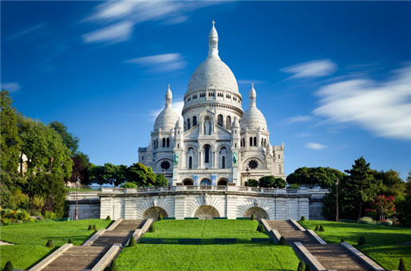

[몽마르트 언덕과 사크레쾨르 대성당] 예술가들의 언덕, 몽마르트에서 만난 파리의 감성

파리 북쪽에 자리한 몽마르트 언덕은 단순한 관광지를 넘어선다. 그곳은 오래전부터 수많은 예술가들의 손길이 닿았던 곳이며, 지금도 골목 곳곳에 그 감성이 살아 숨 쉰다. 좁고 경사진 돌길을 따라 오르면, 마치 타임머신을 타고 19세기 화실 거리로 들어선 듯한 기분이 든다. 이곳에서는 유명한 작품들이 탄생했고, 지금도 새로운 예술이 피어나고 있다.
특히 언덕 꼭대기에 우뚝 솟은 ‘사크레쾨르 대성당’은 몽마르트를 상징하는 존재다. 하얀 돔 형태의 건축물은 로마-비잔틴 양식으로 지어졌으며, 내부는 조용하고 고요한 분위기 속에서 엄숙한 감동을 자아낸다. 성당 앞 광장에 서면 파리 시내가 한눈에 내려다보이고, 햇살이 퍼지는 아침이나 노을이 드리운 저녁에는 도시 전체가 그림처럼 펼쳐진다.
몽마르트는 파리에서 가장 높은 지대 중 하나로, 그 높이만큼 풍경도 특별하다. 이 언덕은 단순한 배경이 아니라, 빈센트 반 고흐, 피카소, 르누아르 같은 예술가들이 삶과 영감을 나눈 공간이었다. 그들의 작업실이 있던 골목, 그림을 그리던 카페, 토론을 벌이던 광장 모두가 여전히 존재하며 그 자리에 지금은 새로운 세대의 화가들이 앉아 그림을 그리고 있다.
‘테르트르 광장(Place du Tertre)’은 몽마르트를 대표하는 장소 중 하나다. 이곳은 낮에는 관광객들로 붐비고, 밤에는 조명이 은은하게 켜지며 몽마르트 특유의 낭만이 완성된다. 거리 화가들이 직접 그린 초상화, 풍경화, 그리고 즉석 드로잉은 이곳에서만 만날 수 있는 추억의 한 조각이다.
몽마르트를 걷다 보면 ‘물랭 드 라 갈레트’나 ‘르 콩셰르 뤼쉐’ 같은 전통 있는 카페와 레스토랑도 만날 수 있다. 이곳은 단순한 식사 공간이 아니라, 파리 문화의 중심지이자 예술가들의 안식처였다. 샹송이 흐르고 와인잔이 부딪히는 공간 속에서 파리 사람들의 삶의 리듬을 그대로 느낄 수 있다.
또 다른 명소는 영화 <아멜리에>의 배경이 된 ‘카페 데 두 물랭(Café des Deux Moulins)’이다. 실제로 방문하면 영화의 감성이 그대로 살아 있으며, 마치 주인공이 창가에 앉아 커피를 마시고 있을 것만 같은 분위기를 자아낸다.
몽마르트는 걷는 여행자에게 가장 어울리는 공간이다. 언덕을 오르는 길은 쉽지 않지만, 그 여정 속에서 만나는 장면들—벽에 그려진 그래피티, 기타를 연주하는 예술가, 고양이와 햇살이 어우러진 창가—는 어디에서도 쉽게 찾을 수 없는 파리의 속살이다.
사크레쾨르 성당의 종소리를 들으며 도시를 내려다보는 그 순간, 몽마르트는 단순한 관광지를 넘어, 예술과 낭만, 그리고 사람 냄새 나는 파리의 진면목을 보여주는 장소가 된다.
만약 파리에서 하루만 시간을 낼 수 있다면, 나는 망설임 없이 몽마르트를 추천한다. 그곳에는 과거와 현재가 어깨를 맞대고 있고, 그 사이에서 누구나 잠시 예술가가 된 듯한 기분을 느낄 수 있다. 그림을 그리지 않아도, 노래를 부르지 않아도, 몽마르트는 우리 모두에게 특별한 이야기를 속삭여준다.
파리의 고요한 풍경과 예술가들의 흔적이 어우러진 몽마르트. 그곳에서 바라본 파리는 언제나 낯설면서도 따뜻하게 마음을 울린다.